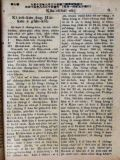

Languages
台文
｜
中文
｜
日本語
｜
English
字體
小
｜
中
｜
大
首頁
/
白話字數位典藏
白話字數位典藏全文檢索
查詢模式
選擇年代
清國時代(1885-1895)
日本時代(1895-1945)
戰後(1945-1969)
1885-1895
1896-1905
1906-1915
1916-1925
1926-1935
1936-1945
1946-1955
1956-1965
1966-1969
1970-1980
1980-1990
1990-2000
2000-2010
2010-
選擇文類
詩
散文
小說
戲劇
傳記
選擇作者
陳清忠
陳清義
編輯部
柯設偕
吳天命
明有德
偕叡廉
周天來
劉華義
王守勇
林茂生
陳添旺
王占魁
柯維思
賴仁聲
陳瓊琚
雪峰逸嵐
吳清鎰
郭水龍
蕭樂善
許水露
葉金木
陳金然
章王由
廖得
鄭連坤
潘道榮
楊士養
梁秀德
劉約翰
周淑慧
高金聲
林燕臣
黃六點
蔡愛義
許有才
主筆
巴克禮
陳鳩水
郭朝成
張基全
陳明清
陳能通
拾穗生
顏振聲
卓恆利
傳道局
胡文池
劉主安
鄭兒玉
Google Search
Yahoo Search
全部
刊名
標題
標題(教羅)
全文
全文(教羅)
作者
第78頁，共141頁(共2,805筆資料) 0.7156388759613sec
1
...
76
77
78
79
80
...
141
To Page
GO
文字列表
圖文列表
排序
日期
文類
刊名
作者
影像
[1928-5 台灣教會報/芥菜子 文類-散文 作者-陳清義/Tân Chheng-gī]
讀冊桌 [ Tha̍k-chheh-toh ]
讀冊桌 陳清義 1928.05.01 518卷(芥菜子第27號) p.13-15 基督徒信仰的派別 基督教佇世間，日日teh進步，佇國家社會的中心，活氣生起，已經佔了大部分的勢力，所向望是愛欲予地面上的國，變成做天國。這个是真要緊的事，可惜現代基督徒的中間無一盡十分透徹基督的真意，表示合一的做工，同踮佇基督十字架的 大旗下，盡力去做，來收效果，he是怎樣，照人teh查察，是因為今仔日的基督教中的信徒in 的信仰有掛派別的色彩，來予伊按呢。Taⁿ彼个派別是啥物款，排列佇下底：－ 1. 權勢派。權勢2字，是世間人第一意向的目的，也是世間人所誇口的榮光，因為有權勢的人，做...
[1928-6 台灣教會報/芥菜子 文類-散文 作者-陳清義/Tân Chheng-gī]
讀冊桌 [ Tha̍k-chheh toh ]
讀冊桌 陳清義 1928.06.01 519卷(芥菜子第28號) p.14-15 教會存在的 要素 凡若有思想的，無毋了解教會的真意義。教會毋是禮拜堂。教會就是對眾信徒集合來組織的團體，可見信徒就是教會，教會的信仰心冷熱來移轉。總講，教會的存在，除起心以外，無別款的氣力。這个信心就是靈界生活的表象。信心就是教會用啥物法度來測量，試用幾若款，排列佇下底： 1. 致意祈禱。不論啥物教派中的信者，抑是求道者，著致意祈禱；不但佇公眾的所在祈禱，佇家己的厝內，睏房的中間，若會家己佮上帝交通，就基督已經佇伊的中間；亦教會也建設佇伊的內面。若毋是按呢，雖罔有會友的名，無會友的名，無會...
[1928-9 台灣教會報/芥菜子 文類-散文 作者-陳清義/Tân Chheng-gī]
讀冊桌 [ Tha̍k-chheh-toh ]
讀冊桌 陳清義 1928.09.01 522卷(芥菜子第31號) p.14-15 獨一真神的研究 世間人濟濟毋信萬國所公認的獨一真神上帝，攏是對區守習慣，毋愛研究，趁祖先的流傳，所以致到毋捌上帝。若甘願查考研究，穩當會佮伊相識，來信靠服事伊。Taⁿ這个獨一真神毋是干焦基督教的聖經所記載nā-tiāⁿ，古代的文明國也有講起，也有明明公認伊；試引幾若國排列佇下底來講。 1.埃及國古早的時也有敬奉上帝。查考in古早石碑的文佮in古早的書籍，攏是講上帝獨一無二，無起頭無煞尾，自然而有，天地萬物攏是對上帝創造來成。這佮基督教聖經所講相同。 2.巴比倫國的詩集也濟濟記載敬天的事，...
[1928-11 台灣教會報/芥菜子 文類-散文 作者-陳清義/Tân Chheng-gī]
讀冊桌 [ Tha̍k-chheh-toh ]
讀冊桌 陳清義 1928.11.01 524卷 (芥菜子第33號) p.15-16 教會袂振興的因由 近來教會teh進步頓頓，照人teh拍算是因為傳教師袂曉交際，無外交的手腕，所以袂得通予教會興起，其實毋是按呢，照看現今的社會teh交際，真通予人驚，虛華過頭，傳教師若利用交際欲chhoā人來信主，不但chhoā in袂來，檢采予in chhoā去通虛華也無的確，閣再現今的交際，拄拄親像冊teh講，「世人結交須黃金，黃金不多交不深。」意思是講世間人欲交陪著錢，錢若無濟，交陪袂深。 設使若用交際會予教會興起，傳教師少少的有法得。Taⁿ照研究，教會袂振興的因由，有10項排列佇下底。 ...
[1928-12 台灣教會報/芥菜子 文類-散文 作者-陳清義/Tân Chheng-gī]
讀冊桌 [ Tha̍k-chheh toh ]
讀冊桌 (陳清義) 1928.12 525卷 p.13-14 教會袂振興的因由 (接前號第16面) 佇頂月有論起這層事，有講5項，taⁿ欲閣接紲來講5項。 6. 因為無疼痛人。論這个無疼人，毋是講無疼家己的爸母，某囝，親戚，朋友，就是講無疼一般的人。佇教會中的任職者較濟是重富輕貧，這是予聖神煩惱的事，予教會袂振興的起源。使徒雅各警戒教會講，我的兄弟啊，恁信奉咱榮光的主耶穌基督，毋是用外貌來款待人，不論佗一等號入會堂，著用同款來接接in，毋通用偏私的心來款待in，所以著謹慎，聖經講，著疼人親像家己。 7. 因為無怨恨罪。現在佇教會內，常常容允接納未悔改罪過的人，予in受洗禮做教...
[1934-4 台灣教會公報/芥菜子 文類-傳記 作者-陳清義/Tân Chheng-gī]
故林添火長老的略歷 [ Kò͘ Lîm Thiam-hé Tiúⁿ-ló ê Lio̍k-le̍k ]
故林添火長老的略歷 (陳清義) 1934.4，no.589，pp.31 艋舺教會的長老林添火兄，佇57年前有出世做艋舺教會的林Gōng長老的囝。得著伊的老父的栽培，佇細漢的時就領洗禮。到16歲的時，就是41年前，有去淡水入神學校研究神學，聖經，備辦通做傳道理的人。彼時相佮讀冊--的有21名，這中間有人退學，有人煞工，有人過身，到今仔日所賰猶teh做工--的只有兩個，就是蕭安居牧師佮鄙人。阮大家受偕牧師的教養，林長老對彼時就真gâu做人的朋友，熱心綴主。過幾若年後，偕牧師就派伊去佇板橋社後禮拜堂做傳道師，直接傳主的道理。後來因為都合上，就離開直接傳道的工，來奉這做巡查，勤務佇板橋支廳幾...
[1934-8 台灣教會公報/芥菜子 文類-散文 作者-陳清義/Tân Chheng-gī]
溫柔謙遜 [ Un-jiû Khiam-sùn ]
溫柔謙遜 馬太11章29節 (陳清義) 1934.8，no.593，pp.22-23 論溫柔，謙遜這4字，算是道德中的第一，主耶穌常常教示人著學伊，伊本身有按呢行。伊雖然有上帝的囝的尊稱，降臨做人，甘願受世間的艱苦，受歹人的陷害，全無怨恨的心，循循善教，大行異蹟，無誇口各一的權能。閣再終身順趁上帝的命令，謙卑到死。伊的溫柔謙遜，實在通做萬世的師表。論伊所教示溫柔謙遜的道理，有記載佇聖經，試引來論：- 1. 看馬太18章1-4所講。當時學生就近耶穌講，佇天國甚物人最大？耶穌叫一个囝仔徛佇面前講，我實在共恁講，無倒轉親像囝仔，袂得入天國。所以凡若謙遜親像囝仔，就佇天國最大。因為囝...
[1934-9 台灣教會公報/芥菜子 文類-散文 作者-陳清義/Tân Chheng-gī]
艋舺教會 [ Báng-kah Kàu-hoē ]
艋舺教會 1934.9，no.594，pp.28-30 1. 佇7月14日，有開主日學夏季學校兩禮拜久，逐日有70外个來赴。教員大家真熱心來教，學白話字的速成法，佮主日學部會所定的聖經節暗念，有濟濟囝仔得著真濟的效果。佇28日下晡2點，有開親牧會，也有茶餅會，也有翕相，攏總有130外人，大家真歡喜。 2. 佇7月22日，有行洗禮，大人一个，囡仔5个，接納守聖餐一个。29日有守聖餐，陪餐者70人。 3. 佇8月9日，有設敬老會，彼日來赴會的人有140人，有吟詩，祈禱，讀聖經，講信主的履歷，有將祝詞來送予in，也有有志者的慶賀，就是偕先生，徐牧師，柯先生，閣吳傳道娘的答詞。陳牧...
[1934-9 台灣教會公報/芥菜子 文類-散文 作者-陳清義/Tân Chheng-gī]
敬老 [ Kèng-ló ]
敬老 (陳清義) 利未記 19章32節 1934. 9，no. 594，pp. 22-23 「見著白頭毛的人著起來徛，敬伊是老大，來敬畏恁的上帝；我耶和華的命令按呢。」 聖經的教示稱做完全，因為有逐款的教示佇teh。毋若教示人拜上帝，信耶穌，救靈贖罪若定，另外有教示真濟款，講袂盡。今這節的教示，是講人著尊敬老大的意思，照猶太的規矩，若有一个白頭毛--的入來，少年人著起敬，這个就是尊敬的意思。有的講，這个老人無學問，真粗魯，無名聲，欲怎樣尊敬伊？不管伊甚物款，著尊敬伊，因為有通予人尊敬的所在。我愛講3項。 1. 伊有平素的款通尊敬伊。因為有過去的經驗，閱歷佮見聞。雖罔無讀冊，...
[1934-10 台灣教會公報/芥菜子 文類-散文 作者-陳清義/Tân Chheng-gī]
講壇 [ Káng-toâⁿ ]
講壇 (陳清義) 1934. 10，no .595，pp .22-23 祭司長的訴訟，佮彼拉多的裁判(馬可15：1-15)。 主耶穌佇世間的時，周遊四方傳道。後來有予猶太人押送到彼拉多的面前。這个彼拉多是甚物人，就是羅馬皇帝所派來猶太做總督--的。伊的職任雖罔是收稅，猶久也有治理的權；所以有設公廳來裁判百姓的代誌。當時猶太的祭司長，濫糝告耶穌，所以押送耶穌到彼拉多的面前。 論祭司長的訴訟有3項： 1. 誘惑人民。就是講，耶穌傳異端的教，來誘惑百姓，攪擾眾人，這个是悖逆的意思，用按呢來誣告，愛予耶穌死。耶穌佇世間的時，四界傳道理，醫病，趕鬼，攏是利益人，毋捌害人；猶太...
[1934-11 台灣教會公報/芥菜子 文類-散文 作者-陳清義/Tân Chheng-gī]
腓力佮太監 [ Hui-le̍k kap Thài-kàm ]
腓力佮太監 (陳清義) 1934. 11，no. 596，pp. 21-22 使徒8章26-40節，讀這幾節的聖經，不止有所敢，就知是個人佈道的事實，就是腓力chhoā太監來歸主。今將in的狀況，對三方面來研究，排列佇下底：- 頭一方面：論腓力 腓力是甚物人，就是使徒所設立7个執事的中間的一个，因為司提反拄著迫害，四散徛起。腓力就去傳道理佇撒馬利亞的頂厝，用撒馬利亞做永遠徛起的所在。後來伊有對Ai-thê-o-pek的太監傳道理，紲共伊領洗禮。按呢腓力算是亞非利加洲佈道的頭一人。因為Ai-thê-o-pek就是亞非利加東北的國，對猶太來看，就是西南爿的港地。咱攏深知腓力算...
[1934-12 台灣教會公報/芥菜子 文類-散文 作者-陳清義/Tân Chheng-gī]
人生的幸福 [ Jîn-seng ê Hēng-hok ]
人生的幸福 (陳清義) 1934.12，no.597，pp.22-23 提摩太前書，4章8節。論調劑身軀的事，是講著鍛鍊武藝，來調養身體。 論敬虔佇主的事，是講著練敬虔的德行，來服事上帝；兩項攏有利益。總是利益身軀的是較小可，利益敬虔的德行來服事上帝，是較大；因為今世，來世攏有得著福氣。對按呢來看，人生的幸福有3項大要緊：- 1. 身體健康 有一句話是按呢講，「病時方知健是仙。」意思是講破病的時，才知勇健是仙；因為人若無勇健，就無真正的慰安。所以人若無破病的時，毋知影健康是甚物。身體健康的人，看世界是真美麗；雖罔拄著甚物試煉，損失，災害，也毋知伊的艱苦。身體若衰荏的...

[1926-8 芥菜子 文類-散文 作者-陳清義/Tân Chheng-gī]
(4)
基督教佮佛教的研究 [ Ki-tok-kàu kap Hu̍t-kàu ê gián-kiù ]
基督教佮佛教的研究 世間的宗教，毋但一款，派別真濟，照學者所研究，聚集歸類，通講有3大類。 I. 蠻族tek宗教。 II. 一國 tek宗教。 III. 世界tek宗教。 啥物號做蠻族tek宗教？就是親像火教，多神教。 啥物號做一國tek宗教？就是親像希臘教，道教。也啥物號做世界tek宗教？就是基督教、佛教、回回教這款。 今這三个教，雖然平平稱做世界tek宗教，總是無攏總有救世主義的宗旨佇teh。回回教佇台灣無，毋免講，kan-ta將基督教佮佛教來講： 照咱所知基督教是救世主義的宗教，佛教是厭世主義的宗教。今...
[1926-8 芥菜子 文類-散文 作者-陳清義/Tân Chheng-gī]
(1)
著全家拜上帝 [ Tio̍h choân-ke pài Siōng-tè ]
著全家拜上帝 咱人踮佇這世間，家內的人數不論濟少，要緊著同心敬拜全能的上帝，做咱的天爸；這个是真要緊的事。可惜現今佇咱教會的中間，有濟濟的，猶未全家拜上帝，致到家內的信仰無相同，常常顯出tōng-tu̍t，大欠缺平安，來失落福氣。若會全家敬拜上帝，信仰相同，行siâng條的路，就真有平安，真有福氣。 這tia̍p愛引幾若个古早的信徒，有全家拜上帝，來做咱的模樣： 1、 Lū-tí-a。這个婦人人有全家拜上帝，伊是Chhui-ngá chhui-lat城的人teh做chi-sek-pò͘ 的生理，平素有拜上帝，信道理；主開啟伊的心，予伊全向保羅所講，全家領...
[1926-7 芥菜子 文類-散文 作者-陳清義/Tân Chheng-gī]
(1)
來看 [ Lâi-khoàⁿ ]
來看。 佇約翰一章 46節。有記載這2字。就是腓力叫那但業來看耶穌，當時主耶穌佇世間，有揀召人來做伊學生，代先有揀召安得烈、彼得、腓力，也腓力受揀召了後，就紲招伊的朋友那但業，總是那但業毋信，僥疑講拿撒勒是僻野的所在，thài會出聖德的人。腓力無愛佮伊辯駁，也無啥物證據予伊。Kan-ta 共伊講，來看，按呢nā-tiāⁿ，講這句不止有意思，予咱通捌幾若項；排列佇下底。 1、 腓力講這句，真好法度。 人佇僥疑袂明的時，用講的，較oh了解，著用看較快明白。譬喻共人講飛行機、活動寫真、蓄音器，人聽了真oh 明，若叫伊來看，隨時會了解。 腓力共那但業講。古早的先知佮摩西所...
[1926-6 芥菜子 文類-散文 作者-陳清義/Tân Chheng-gī]
(1)
世間的光 [ Sè-kan ê Kng ]
世間的光 佇約翰8章12節有記載主耶穌共眾人講一句話，講：「我就是世間的光。」 對古早到現今，有濟濟大人物予人稱做「人群的光。」親像東洋的孔子，釋迦，老子佮西洋的蘇格拉底等。總是這款的光有限，所照的地方無偌遠，無親像基督的光會照到通世間。所以伊講是世間的光無錯。 今伊的光是啥物款的光？ 1、 伊的光，是啟示的光。啟示啥物？ A、 啟示人捌上帝。基督猶未來以前，人雖然知上帝，總是無徹底；到基督來了，人通十分明白上帝是做人類的天爸。 B、 啟示人捌本身。世間人無明白家己是甚物人...
[1926-5 芥菜子 文類-選擇文類 作者-陳清義/Tân Chheng-gī]
(4)
教會的消息 [ Kàu-hoē ê siau-sit ]
教會的消息 (A) 教會佮傳教師的表 I 艋舺同會 1 艋舺 陳清義 劉約翰 2 板橋 郭樹枝 II 新店同會 3 新店 郭水龍 4 內湖 郭水龍 5 坪林 呂阿家 III 大稻埕同會 6 大稻埕 郭希信 陳阿本 7 新莊 林清火 IV 水轉跤同會 8 水轉跤 康清塗 9 暖暖 徐春福 10金包裡 林水柳 V 淡水同會 11 淡水 章天基 12 八里分 曹添旺 VI 三角湧同會 13三角湧 李滾泉 14大科崁 15龍潭埤 顏寬孩 VII 基隆同會 16基隆 張金波...
[1926-5 芥菜子 文類-散文 作者-陳清義/Tân Chheng-gī]
(2)
基督徒的品格 [ Ki-tok-tô͘ ê phín-keh ]
基督徒的品格 咱大家知影對反悔信主了後就是做基督徒，抑是講做拜上帝的人。有這項真要緊著照顧。彼項是啥物？就是品格。基督徒欲予伊品格較純全、較高尚；著學啥物人的模樣？著學主耶穌的模樣。因為伊有完全的品格通予咱學，以外無；總是咱欲學到親像主耶穌的品格，是真oh得。毋kú也是著出力來學，上少也著學3項。這3項是基督徒不能免著有--的。這3項是啥物？ 1、仁愛的品格。 論仁愛的心是基督徒所應該著有。主耶穌有行完全的仁愛，咱著出力來學。伊佇世間所行逐項事攏是用仁愛做根本，不論是教示人、醫治人、拯救人，攏是對伊仁愛的心來顯出。咱著學伊，就會得著仁愛的結果。照保羅所講，...
[1926-5 芥菜子 文類-小說 作者-陳清義/Tân Chheng-gī]
(2)
一滴一滴的水 [ Chi̍t tih chi̍t tih ê chuí ]
「一滴一滴的水」 (紲接以前) (7) 神佮車夫 有一个人駛一隻馬車，載真濟物，經過爛溝糜的細條路；因為車輪牢土糜。，所以馬拖攏袂進前。 為著按呢，這个人。全然無勞碌，隨時跪落佇土糜頂，大聲hiu神來幫贊。 神就應講，「貧惰的人ah，將你的肩頭掛佇車輪，出力照所會來sak，按呢iáu-kú若著欠用我的幫贊，我就歡喜聽lah ！著會記得彼句俗語講，「天幫贊自助的人。」 教示 常常聽見人teh祈禱的時，所求佮這款siâng類--的不止濟。「爸ah，你的福音到台灣已經五十外年久lah！但是來信你的人是真少。求你著將你的神開啟 in 的心，予in緊緊來佮阮相佮行這條天的路，通來得...
[1935-2 台灣教會公報/芥菜子 文類-傳記 作者-陳清義/Tân Chheng-gī]
李Bêng-tē長老的小傳 [ Lí Bêng-tē Tiúⁿ-ló ê Sió-toān ]
李Bêng-tē長老的小傳1935.02 第599卷 p.29芥菜子第109 hō(陳清義)李長老是泉州的人。伊來佇艋舺做金仔店，有來聽道理。1900年有領洗禮，是偕牧師共伊領洗禮，後--來有做執事。到1905年有升做長老。伊常常赴小會、中會、大會，也幾若擺去台南。1934年12月6日別世，按呢頭到尾做長老29年。李長老對拜上帝起，真熱心，罕得無到拜堂做禮拜，伊來禮拜，時間真準。1904年，就是31年前，伊有提倡教會著獨立。伊就佮眾長老、執事參詳，彼霎北部猶未有中會。伊佮眾長執，去淡水佮華牧師、吳牧師參詳，伊真歡喜，就替in稟加拿大的母會，準in設中會佇北部。母會有准，就定彼年10 月4 日，...
第78頁，共141頁(共2,805筆資料)
1
...
76
77
78
79
80
...
141
To Page
GO
數位典藏國家型科技計劃
拓展台灣數位典藏計畫
版權所有 國立台灣師範大學 台灣文化及語言文學研究所©2008
10610 台北市和平東路一段162號│TEL 02-7734-5516│Fax 02-2358-2461
計劃簡介
典藏特色
執行架構
計畫典藏數位化流程
成員介紹
台灣白話字發展簡介
巴克禮牧師與《台灣教會公報》
廈門話字典-杜嘉德
白話字教學-打馬字
中國南方白話字發展
台灣基督教長老教會簡表
台灣基督教長老教會教會歷史委員會
《北部台灣基督長老教會教會ê歷史》
關於陳清忠
白話字文學：台灣文學的早春